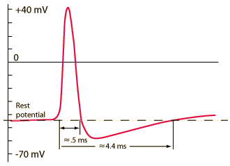
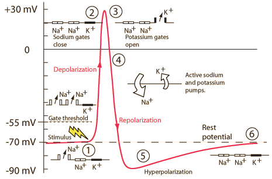

Action Potentials
|  |
Action potential from a giant squid axon.
| |
In response to the appropriate stimulus, the cell membrane of a nerve cell goes through a sequence of depolarization from its rest state followed by repolarization to that rest state. In the sequence, it actually reverses its normal polarity for a brief period before reestablishing the rest potential.
The above example of the squid action potential was patterned after a measured action potential shown in West's Medical Physics. The approximate time intervals shown were scaled from time markers on the experimental trace. The times seem very short to me. I thought the recovery time to rest potential was more like 100 msec.
The action potential sequence is essential for neural communication. The simplest action in response to thought requires many such action potentials for its communication and performance. For modeling the action potential for a human nerve cell, a nominal rest potential of -70 mV will be used. The process involves several steps:

- A stimulus is received by the dendrites of a nerve cell. This causes the Na+ channels to open. If the opening is sufficient to drive the interior potential from -70 mV up to -55 mV, the process continues.
- Having reached the action threshold, more Na+ channels (sometimes called voltage-gated channels) open. The Na+ influx drives the interior of the cell membrane up to about +30 mV. The process to this point is called depolarization.
- The Na+ channels close and the K+ channels open. Since the K+ channels are much slower to open, the depolarization has time to be completed. Having both Na+ and K+ channels open at the same time would drive the system toward neutrality and prevent the creation of the action potential.
- With the K+ channels open, the membrance begins to repolarize back toward its rest potential.
- The repolarization typically overshoots the rest potential to about -90 mV. This is called hyperpolarization and would seem to be counterproductive, but it is actually important in the transmission of information. Hyperpolarization prevents the neuron from receiving another stimulus during this time, or at least raises the threshold for any new stimulus. Part of the importance of hyperpolarization is in preventing any stimulus already sent up an axon from triggering another action potential in the opposite direction. In other words, hyperpolarization assures that the signal is proceeding in one direction.
- After hyperpolarization, the Na+/K+ pump eventually brings the membrane back to its resting state of -70 mV .
Contributing author: Ka Xiong Charand
|
Index
Bioelectricty |